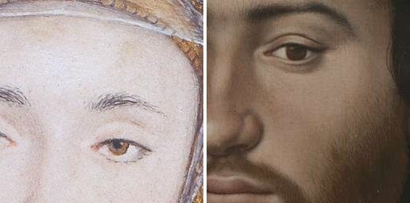
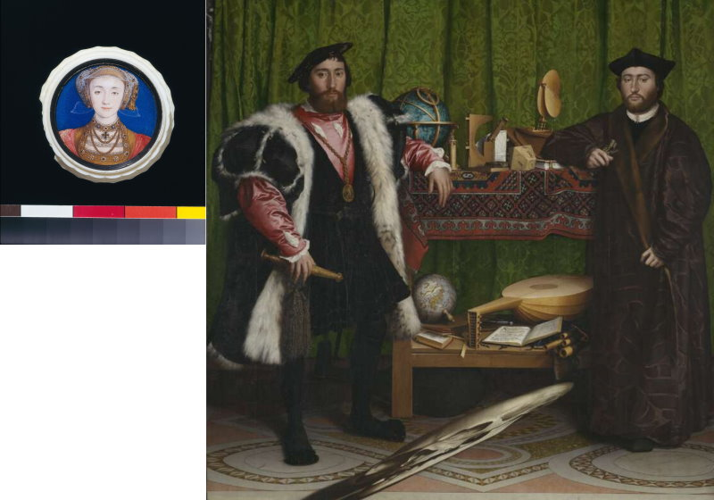
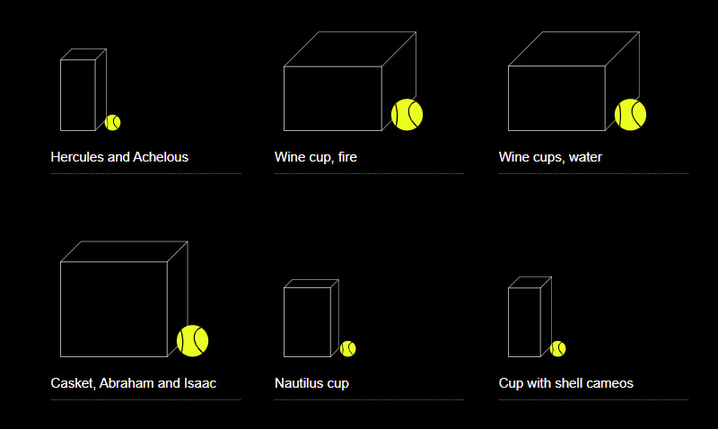
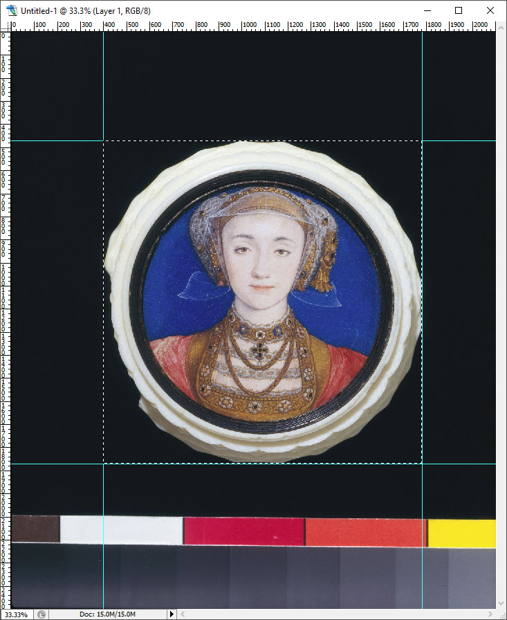
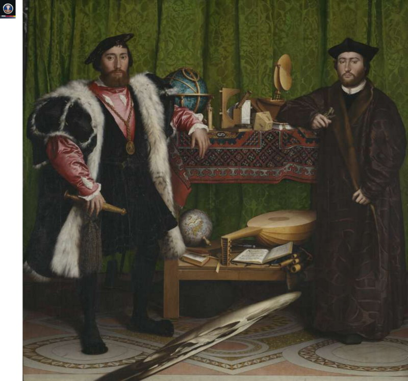
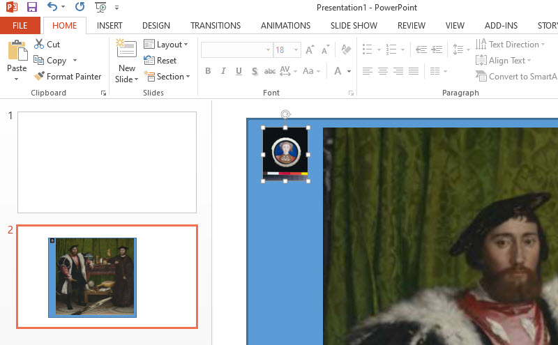

Digitisation doesn't make everything equal, it just makes everything the same size.

We are usually offered more pixels per millimetre for a very tiny object than for a very large one. The camera gets closer to small things, because it can. In any digitised collection, small things like stamps and coins have more detail than big things like paintings and tapestries.
We don't usually think about this because we are used to it. Capturing The Night Watch at 50 pixels per millimetre is a major undertaking. Capturing a postage stamp at this resolution is trivial on a cheap home scanner.
More pixels per real-world millimeter are available for the the first Holbein below, than for the second:
, set in a turned ivory box")
Portrait miniature of Anne of Cleves by Hans Holbein the younger (1497-1543), set in a turned ivory box. © Victoria and Albert Museum, London. Image and metadata usage subject to V&A Terms and Conditions.
.")
Hans Holbein the Younger, 1497/8 - 1543. Jean de Dinteville and Georges de Selve ('The Ambassadors'). These images are © The National Gallery, London. These works are licensed under a Creative Commons Attribution-NonCommercial-NoDerivatives 4.0 International License (CC BY-NC-ND 4.0).
Web page design leaves spaces for images, and the spaces get filled. What if we want to introduce some notion of relative size? We could try to use the pixel dimensions of the images to give some sense of scale. The Anne of Cleves image is about 2000 pixels wide, the Ambassadors about 5000, therefore:
This scale is obviously hopelessly wrong. At least The Ambassadors comes out bigger than Anne of Cleves in this case. There's no reason for this to be generally true, especially here where the two images are coming from different places.
Maybe we can get a clue from the maximum level of detail we can find in both images - how far can we zoom in?
The fact that the two faces end up at roughly the same size is probably a coincidence. But perhaps it tells us a little about what we want when we look at each of these images.
Even if we know how big things are from written descriptions, they are presented using the same pixels on a screen. And if there is deep zoom, we're still using the same viewport from one item to the next - we're looking at everything through the same window every time. Maybe you can spread your fingers or spin your mousewheel more for some images than for others, zoom deeper into them; but only context, experience and familiarity give you a clue how big something really is.
The exciting tininess of a miniature, the macho spread of The Ambassadors - they light up the same dots on the screen.
This is hardly a new idea. Deep Zoom is just one more kind of mechanical reproduction, to be added to those given to us in the 19th and 20th centuries.
Can IIIF help?
No, not really. We're still sitting in front of our monitors or looking at our phones. But there are some ways in which IIIF can do something with scale, that allows objects to be presented with at least an idea of their actual sizes.
The Physical Dimensions service is an extension to IIIF. It is an extra piece of metadata a publisher can provide, that tells a software client what the physical scale is - how many pixels in the image make up a millimeter in the real world. Software clients can use this information to show a dynamic ruler:
(Click for larger)
Example taken from
MDZ Digital Library team at the Bavarian State Library.
A user interface could also use this scale information to show an item compared to some other real world object:
Screen shot from The Waddesdon Bequest, designed by Good, Form & Spectacle for The British Museum.
What could we do if the two IIIF Image Services for the two Holbeins had this extension service? First of all, what would it say?
The specification says:
...the physical dimensions service need only report two additional pieces of information: the scale factor to multiply the dimensions by to calculate the physical dimensions, and the units for those generated physical dimensions.
When used with the Image API, it allows a client to calculate the pixels per inch (often abbreviated as PPI or DPI) of the image it is associated with. When used with the Presentation API, it gives the size of the object that the Canvas is a surrogate for.
Here is what we know about the sizes of the two items:
The image service for the Anne of Cleves miniature is 2103 x 2500 pixels. Looking at the full image, we can measure the width in pixels of the object itself as 1383 x 1401:
...so let's say, for the purposes of this example, that 60mm is 1400 pixels in this photograph. Which means that this image, at the full size, is 23.33 pixels per mm.
The image service for The Ambassadors is 5194 x 5124 pixels (w x h) - almost square but ever so slightly wider than it is high. But the catalogue description says 207 x 209.5 cm. Other images online are also wider, including Wikimedia's 30000 × 29560 version. Maybe the catalogue description includes the frame? Anyway, for the example we will split the difference and say that 2085mm is 5159 pixels. Which gives us 2.47 pixels per mm.
Anne of Cleves is almost exactly ten times the resolution of The Ambassadors - the camera gets closer!
Given this information, we can now show the two images in the same web page at the correct physical scale:
While this respects the relative sizes of the pictures, it's next to useless if we actually want to look at Anne. But with the physical dimension service on our images, we can work out how they should scale together for deep zoom, too:
Deep zoom version using OpenSeadragon. View the source of the web page to see how this is done.
Now we can zoom right into the Anne image in great detail, while maintaining the relative sizes.
The above example only uses the IIIF Image API. The code on this page decides that Anne should go on the left, then a little gap, then The Ambassadors.
The other approach, which ends up at the same place as the above example, is to compose a IIIF Canvas with two images on it at the correct relative sizes, and publish it, and hope that clients will render it correctly.
In IIIF, the Canvas is a space for assembling content, like a PowerPoint slide.
Rather than giving two independent IIIF resources to the client, the Publisher could place the items on a IIIF Canvas. Imagine doing exactly the same thing in PowerPoint:
We can do this with a IIIF Canvas, too, and publish it in a IIIF Manifest. Then a viewer could display the canvas - that is, display the composition we intend:
OpenSeadragon simulation of a CANVAS rendering. The Canvas has been shown in blue to make clear what is being displayed here. The code in the source of this page is designed to reduce the idea of the canvas and how things are placed on it to the minimum level of simplicity.
...or rather, we could do this if OpenSeadragon supported a IIIF Canvas. But it doesn't, so if we want to do things like this, outside of a complex viewer, we have to do the maths and the composition ourselves (view the source of this page to see how) and then add the images to OpenSeadragon manually.
This article is a disguised use case for Canvas Panel.
Canvas Panel is a component that occupies the same niche as OpenSeadragon - it's not itself a viewer, it doesn't understand manifests or ranges or thumbnails or navigation; it doesn't have any UI other than reacting to zoom gestures. It's a rendering surface that translates an arbitrarily complex canvas composition for you, so you don't have to work everything out yourself. Use it where you would use OpenSeadragon (or Leaflet, or any other rendering mechanism - even static images).
...

...
{kind=link}